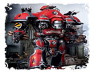
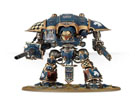

帝国骑士
帝国骑士是一种帝国现存的战争机器，作为帝国最为强大的战争机器之一，他们保护着当地的居民免遭入侵者的危害。

骑士泰坦： 骑士泰坦是骑士战斗群的主力，他们由经验丰富的骑士家族的贵族所驾驶，通过换装不同的武器，骑士泰坦可以应付几乎所有敌人，面对成群的步兵，复仇者加特林会将他们一一撕碎，而在面对装甲目标是时，热熔炮会将他们变成一堆铁水。

骑士侍从： 骑士侍从常常跟随在骑士泰坦的身边，为其排除隐患，起到保护骑士泰坦的作用。他们的驾驶员是骑士家族中的地位较低，通常通过宣誓效忠一位骑士泰坦驾驶员来获得骑士侍从的使用权。